Oracle Content Management(OCM)のアセット管理機能のリポジトリのアクセス権限設定、およびカスタム・ロールを利用した細かい粒度でのアクセス権限設定(Granular Permissions)についてステップ・バイ・ステップで紹介するチュートリアルです
【お知らせ】
この文書は、2023年5月時点での最新バージョン(23.5.1)を元に作成されてます。
チュートリアル内の画面ショットについては、OCMの現在のコンソール画面と異なっている場合があります。
前提条件
- OCMインスタンスが作成済であること(以下の作成手順参照)
- 少なくとも下記4つのOCMインスタンスのアプリケーション・ロールが付与された管理ユーザーを用意すること
- CECContentAdministrator
- CECDeveloperUser
- CECEnterpriseUser
- CECRepositoryAdminisrrator
[Memo]
ユーザーの作成とアプリケーションロールの付与手順は、OCI IAM Identity Domain環境でOracle Content Managementインスタンスの利用ユーザーを作成するもしくはOracle Content Management インスタンスの利用ユーザーを作成するをご確認ください。
0. 説明
リポジトリのアクセス権限設定ついて
リポジトリ（アセット・リポジトリおよびビジネス・リポジトリ）にアクセスできるユーザーを追加する際に、リポジトリ・ロール（以降ロール）を設定します。この操作は、フォルダへのメンバー追加と似ています。ユーザー追加時に設定できるデフォルトのロールは以下3つです
- 参照者 （Viewer）
- コントリビュータ (Contributor)
-
マネージャ (Manager)
[Memo]
ダウンロード実行者(Downloader)のロールはありません、参照者ロールを付与すると、アセットの表示およびダウンロードが操作可能となります
リポジトリにデフォルトロールでメンバー追加すると、リポジトリ内で利用可能な任意のアセット・タイプが付与されたロールの権限範囲内で利用できるようになります（アセット権限）。また、リポジトリ内で利用可能な任意の（全ての）カテゴリに対して、付与されたロールの権限範囲内で利用できるようになります。各ロールのアセット権限は以下の通りです
各ロールとリポジトリ内での具体的な操作は、以下のドキュメントに記載されてます
1. 準備
OCMのアセット管理機能を利用するための準備作業を行います。今回はタクソノミとビジネス・リポジトリをそれぞれ作成し、関連付けを行います。また、ビジネス・リポジトリ内で利用するアセット・タイプは、デフォルトで定義されているFile、Image、Videoの3つのアセット・タイプを利用します
-
OCMに管理ユーザーでサインインします
-
タクソノミを作成します。ここでは以下のようなシンプルな構成のタクソノミを作成します 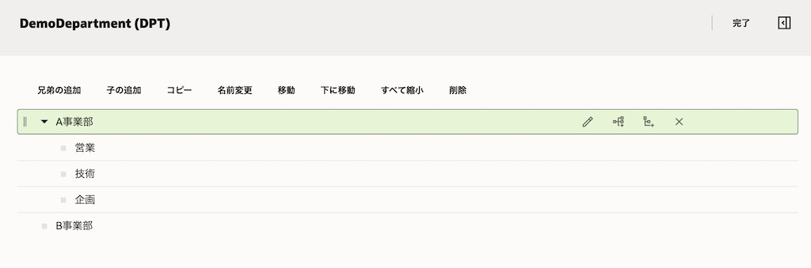
-
作成したタクソノミをプロモートします
[TIPS]
タクソノミの作成およびプロモートは、Oracle Content Managementのタクソノミを使ってみようを参考にしてください -
リポジトリを作成します。ここではビジネス・リポジトリを以下の条件で作成します
- 名前: (任意の名前を指定)
- アセット・タイプ: File, Image, Videoを選択
- タクソノミ: (前の手順でプロモートしたタクソノミを選択)
- 言語: 日本語(ja)
-
その他の設定はすべてデフォルトのままとします 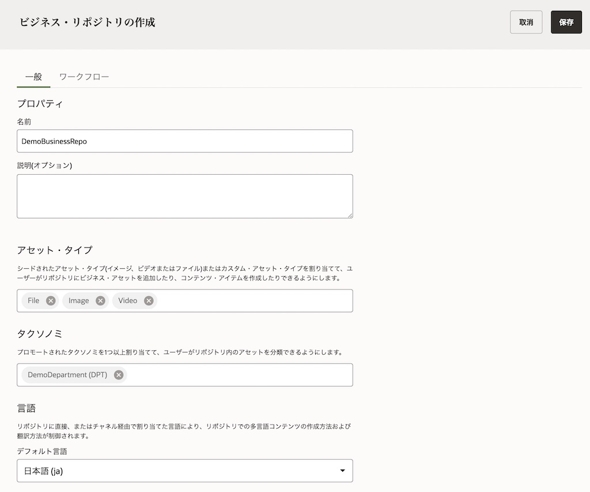
[TIPS]
ビジネス・リポジトリの作成およびアセット・タイプとタクソノミの関連付けは、Oracle Content Management で請求書などの電子ファイルを長期保管してみよう【初級編】を参考にしてください
-
アセットメニューよりリポジトリを開きます。A事業部/営業、A事業部/技術、A事業部/企画の3つのカテゴリにそれぞれ画像ファイルを紐付けて登録します
-
A事業部/営業 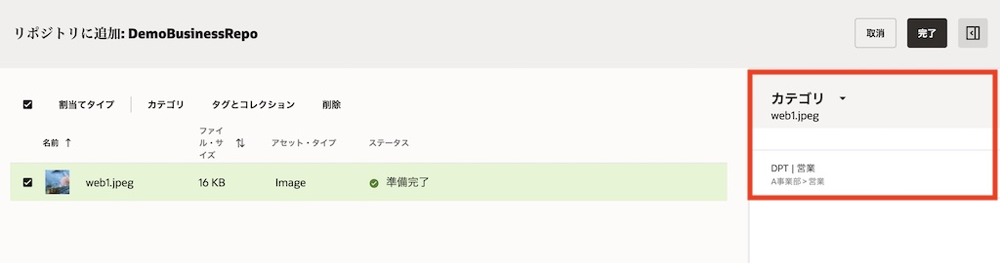
-
A事業部/技術 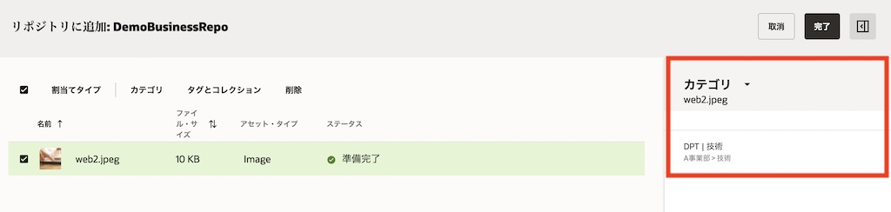
-
A事業部/企画 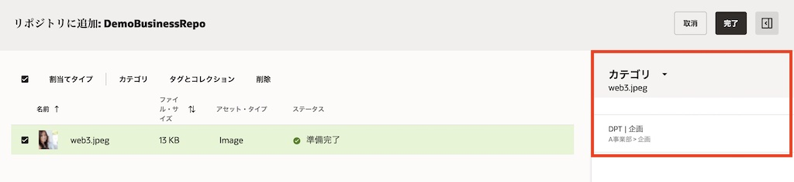
[TIPS]
3つの画像ファイルは、アセット・タイプ=Imageとして登録されます
-
-
カテゴリタブを開きます。各カテゴリにそれぞれ1件ずつ画像ファイルが紐付けされていることを確認します 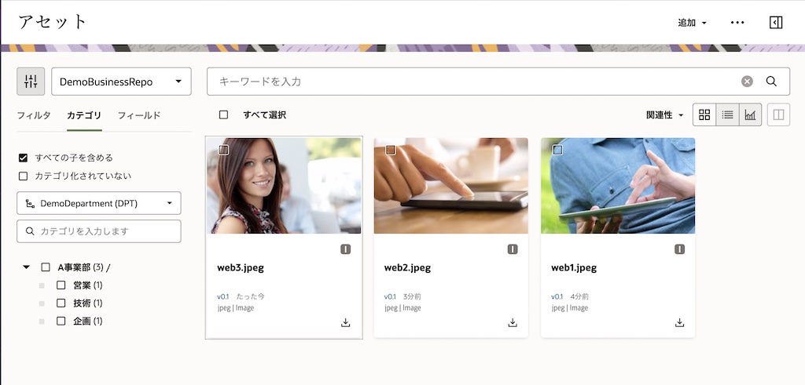
2. ユーザーをリポジトリに追加する
2.1 ユーザーにコントリビュータロールを付与する
別のOCMユーザーをビジネス・リポジトリに追加します。ここではコントリビュータロールを付与します。OCMユーザーを新規作成する方法は、以下のチュートリアルを参考にしてください
- OCI IAM Identity Domains環境の場合
- Identity Cloud Service(IDCS)環境の場合
【TIPS】
OCMユーザーはアセット機能を利用するため、CECEnterpriseUserのアプリケーション・ロールを付与してください
-
ADMINISTRATION:コンテンツ→リポジトリを開きます
-
1.1項で作成・構成したビジネス・リポジトリを選択し、メンバーをクリックします 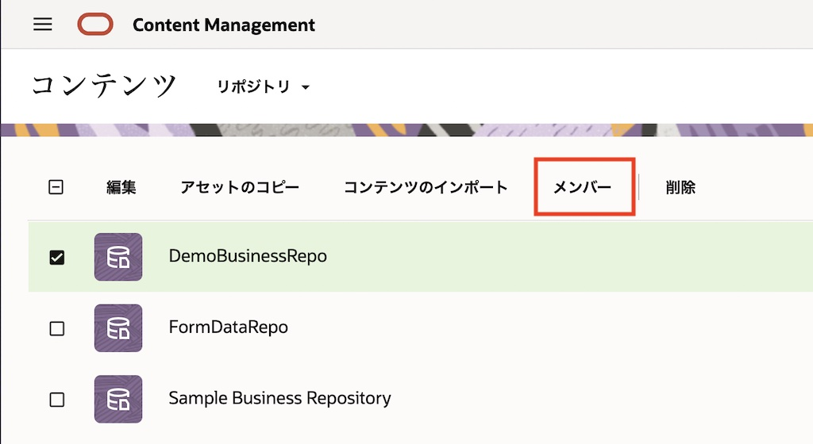
-
メンバーの追加のユーザーとグループで、事前に作成したOCMユーザーを検索します
-
ロールでコントリビュータを選択し、追加をクリックします 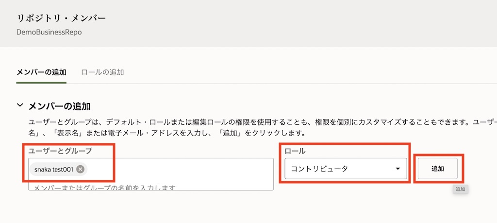
-
OCMユーザーがコントリビュータ権限で追加されるのを確認し、完了をクリックします 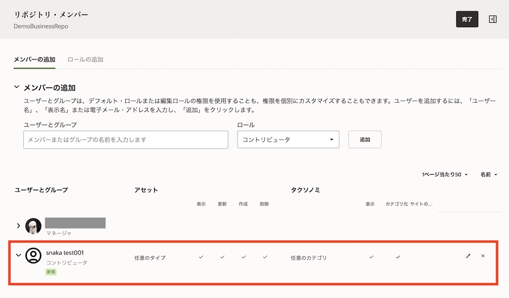
【TIPS】
追加したOCMユーザーはアセット・タイプの任意のタイプで表示、更新、作成、削除が選択済となります。これは、リポジトリ内で利用できるすべてのアセット・タイプに対して、すべての編集操作が可能であることを意味します。
同様に、タクソノミの任意のカテゴリで表示、カテゴリ化が選択済となります。これも、リポジトリ内のすべてのタクソノミ(カテゴリ)に紐付けられたアセットを閲覧可能であること、すべてのカテゴリに対して任意のアセットを追加および削除が可能であることを意味します
2.2 確認
-
別ブラウザを開き、メンバー追加したOCMユーザーでサインインします
-
アセットを開き、2.1項でメンバー追加されたリポジトリを開きます
-
1項で追加した3つの画像がすべて表示されることを確認します 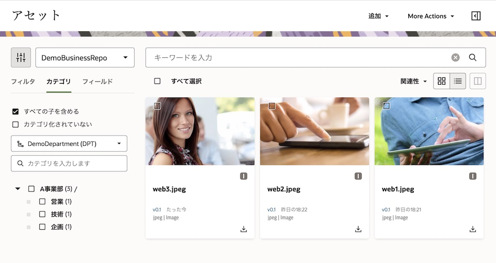
-
A事業部/営業、A事業部/技術、A事業部/企画の3つのカテゴリにそれぞれOffice文書ファイル(Wordなど)を紐付けて登録できることを確認します 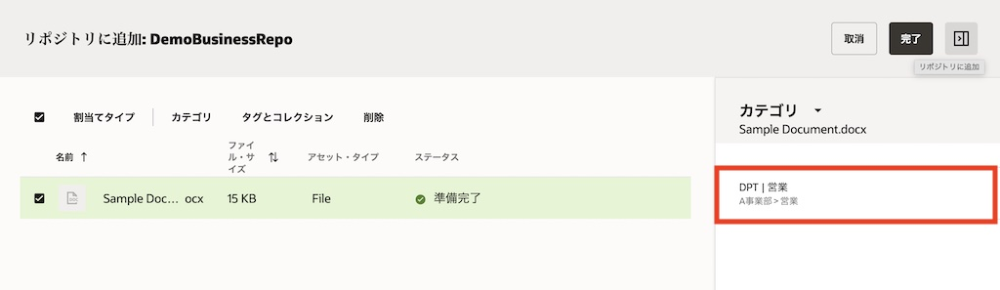
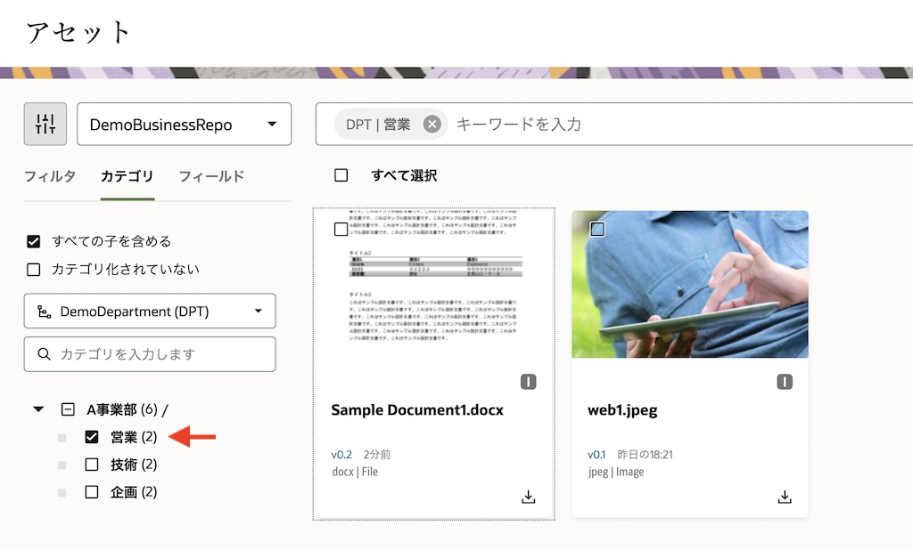
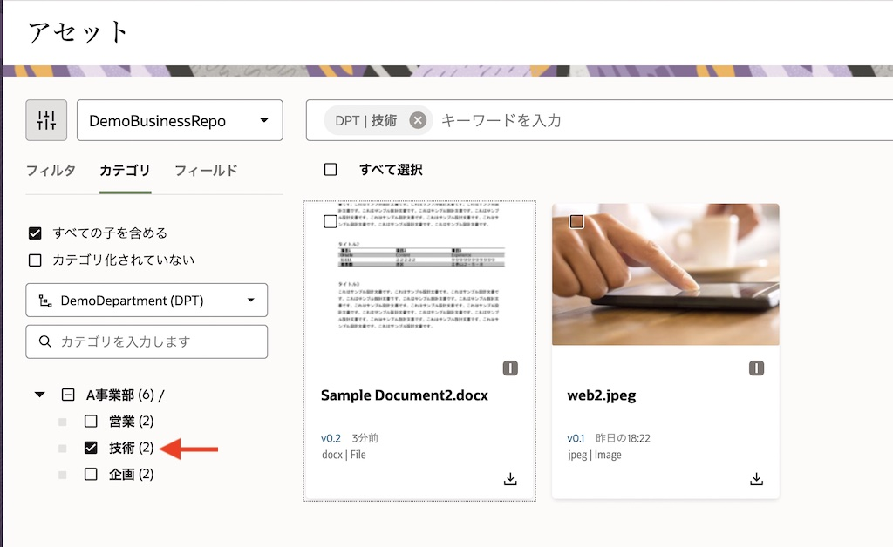
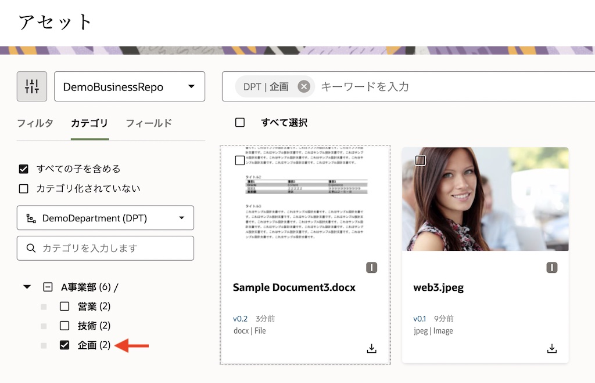
2.3 追加の確認（付与するロールをコントリビュータから参照者に変更）
-
管理ユーザーでOCMにサインインします
-
リポジトリ→メンバーを開き、コントリビュータロールを付与したOCMユーザーの編集アイコンをクリックします 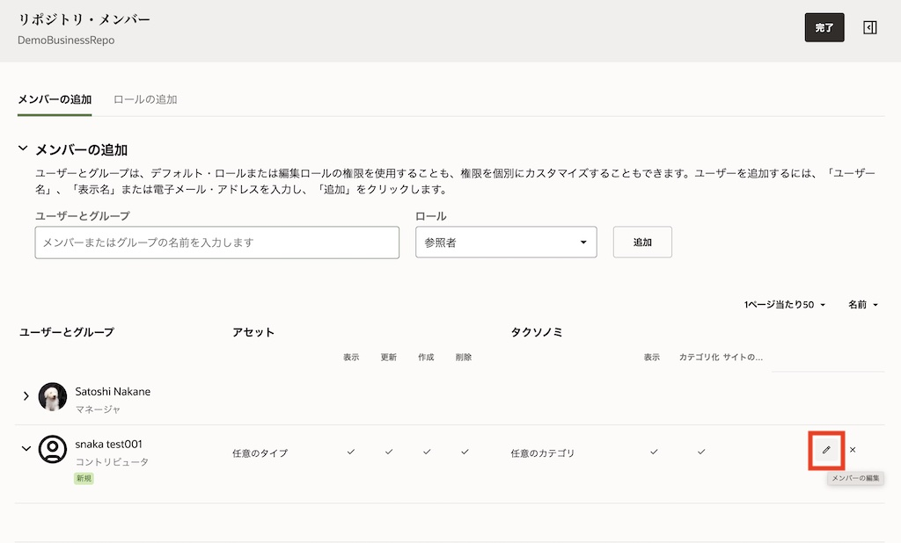
-
ユーザー名の下のコントリビュータ▼をクリックし、参照者を選択します 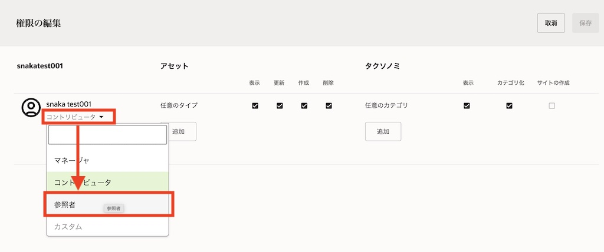
-
保存をクリックします 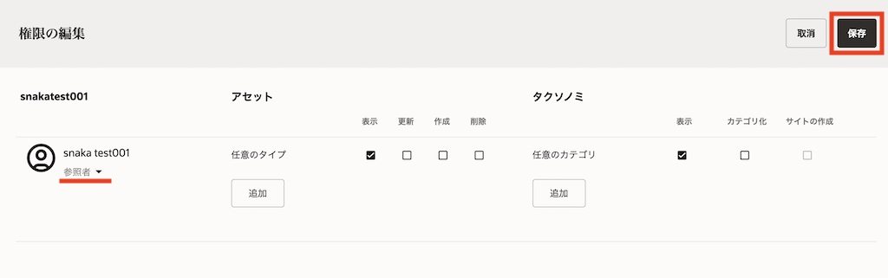
-
参照者ロールを付与したOCMユーザーでサインインします
-
アセットの参照のみが可能で、アセットの追加・作成メニューが表示されないことを確認します。また、アセット→カテゴリでカテゴリの追加や削除のメニューが表示されないことを確認します 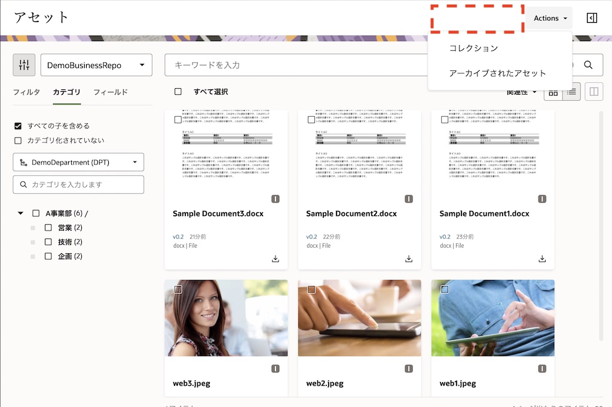
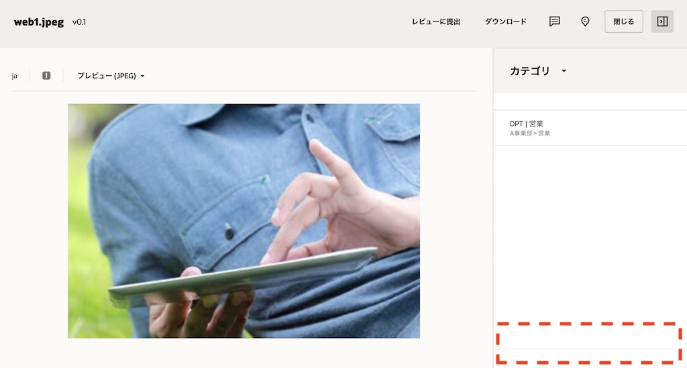
3. カスタム・ロールを利用した細かい粒度の権限設定
3.1 説明
リポジトリのメンバー追加で利用した3つのデフォルトのロール（参照者、コントリビュータ、マネージャ）の他に、管理者はロールを自作できます。これをカスタム・ロールと言います。
カスタム・ロールを作成する時に、アセット・タイプ毎およびカテゴリ毎に操作権限を細かく設定できます。この細かいアクセス権限設定のことをGranular Permissionsと言います。
Granular Permissionsは、アセット・タイプ毎の操作権限（表示、更新、作成、削除）およびカテゴリ毎の操作権限（表示、カテゴリ化）の組み合わせです
カテゴリ毎の操作権限について(説明)
- カテゴリに紐付けされたアセットを参照するには、カテゴリに対して表示(View)権限以上が必要です
- カテゴリに対してアセットを紐付け(追加)するには、カテゴリに対してカテゴリ化(Categorize)権限、およびアセットの更新(Update)権限以上が必要です
- 親カテゴリで設定した操作権限は、その配下の子カテゴリに適用(継承)されます
- 例）親カテゴリに「表示権限」を付与→配下の子カテゴリも「表示権限」が適用される
- 親カテゴリに設定した操作権限は、子カテゴリで拡大（強く）することはできます
- 例）親カテゴリに「表示権限」を付与し、配下の子カテゴリに「カテゴリ化権限」を付与→子カテゴリに対してのみアセットの追加・削除操作が可能(親カテゴリへのアセット追加・削除はできない)
- 親カテゴリに設定した操作権限は、子カテゴリで縮小（弱く）することはできません
- 例）親カテゴリに「カテゴリ化権限」を付与し、配下の子カテゴリに「表示権限」を付与することはできない(設定操作がエラーとなります)
3.2 カスタム・ロールの作成
以下のような細かい権限設定がされた3つのカスタム・ロールの利用を想定します
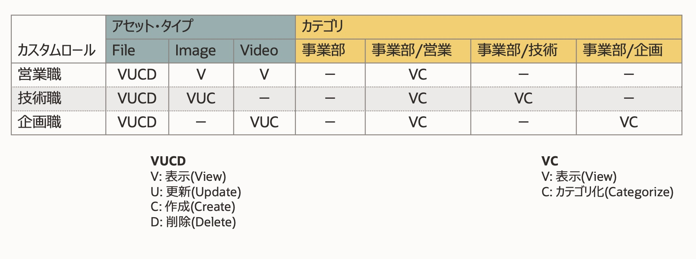
ここでは営業職のカスタム・ロールを作成します
-
管理ユーザーでOCMにサインインします
-
ADMINISTRATION:コンテンツ→カスタム・ロールを開きます
-
作成をクリックします 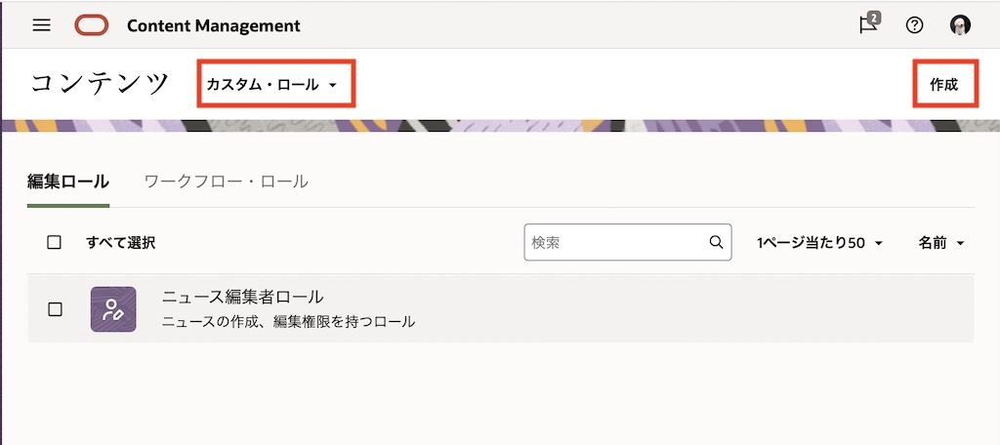
-
名前を入力します。ここでは営業職を入力します
-
「編集権限」で任意のタイプで選択済の権限をすべて解除します。同じように任意のカテゴリの選択もすべて解除します 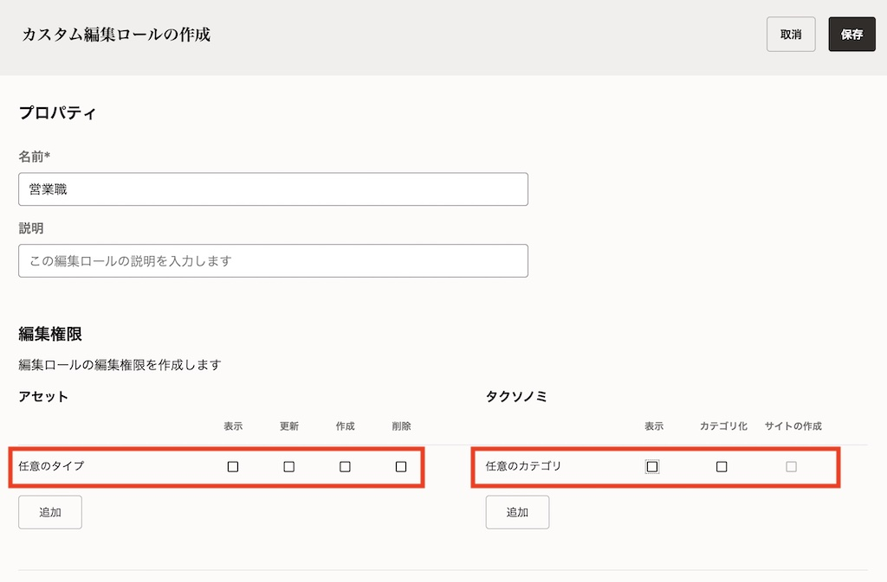
-
「編集権限」のアセットの追加をクリックします
-
File、Image、Videoの3つのアセット・タイプを選択し、保存をクリックします 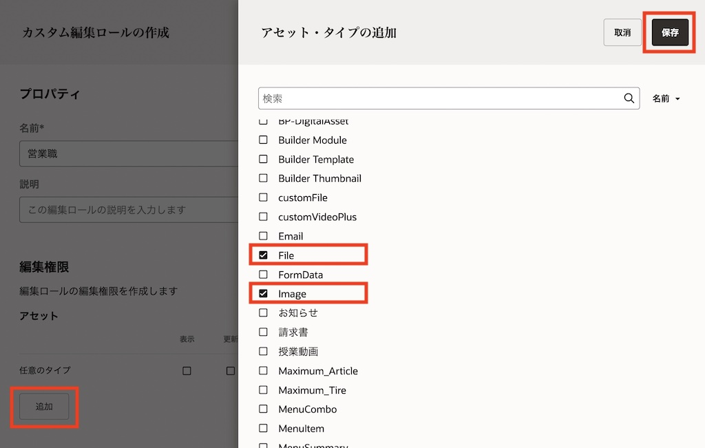
-
Fileの操作権限を削除まで選択します。その他は表示のみを選択します 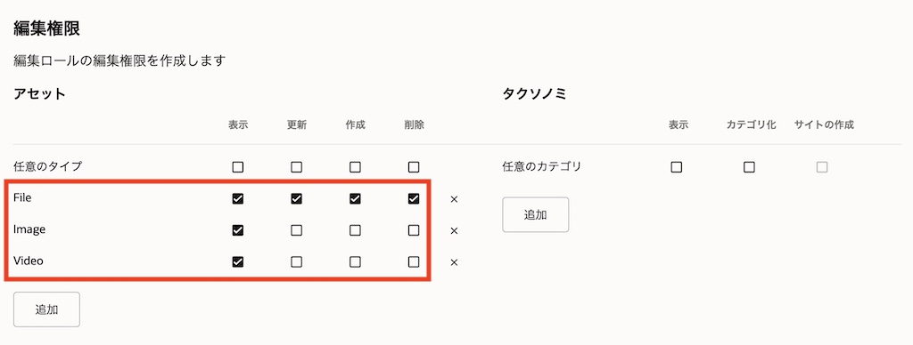
-
-
続けて「タクソノミ」の追加をクリックします
-
一番上のプルダウンメニューより、リポジトリに紐付けたタクソノミを選択します
-
カテゴリを展開し、A事業部配下の営業のみを選択し、保存をクリックします 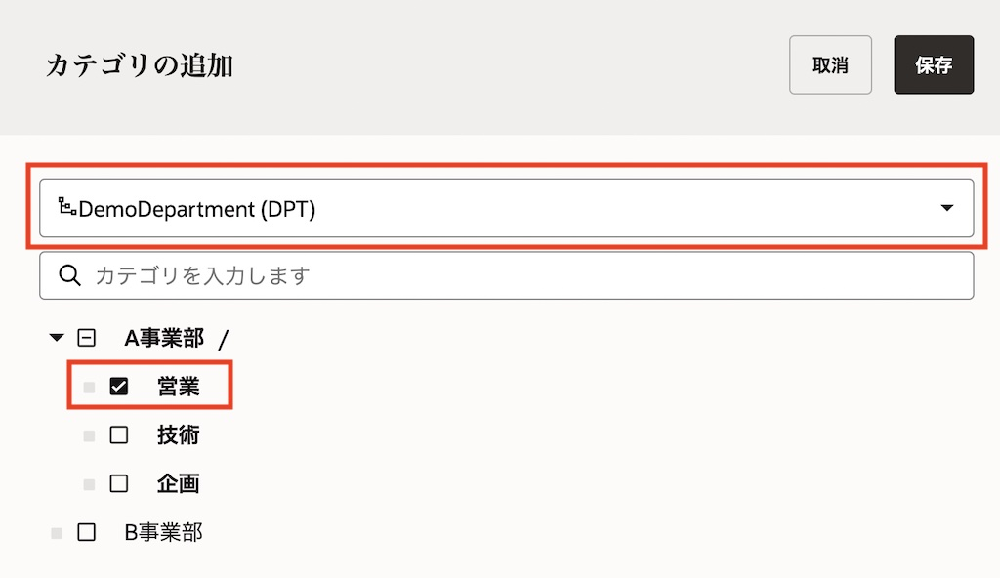
-
追加された営業カテゴリで、カテゴリ化まで選択します 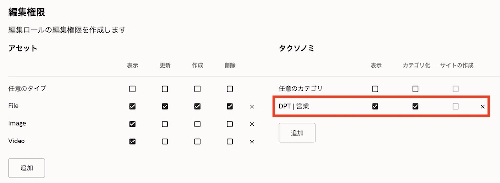
-
-
以下のような選択となっていることを確認し、保存をクリックします 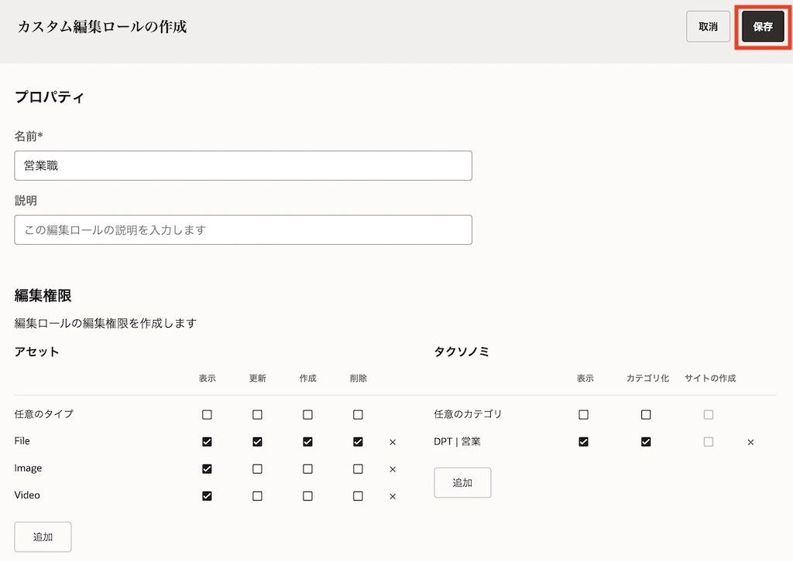
-
営業職のカスタム・ロールが作成されます
3.3 カスタム・ロールをリポジトリに追加する
作成したカスタム・ロールを、リポジトリに追加します。なお、カスタム・ロールは複数のリポジトリで共有して利用することができます
-
引き続き管理ユーザーで、ADMINISTRATION:コンテンツ→リポジトリを開きます
-
リポジトリを選択し、メンバーをクリックします
-
ロールの追加タブをクリックします
-
プルダウンメニューより営業職ロールを選択し、追加をクリックします 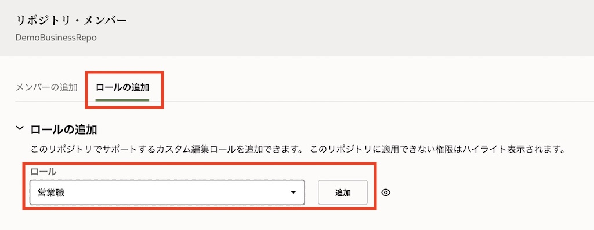
3.4 カスタム・ロールをOCMユーザーに割り当てる
リポジトリに追加したカスタムロールを、OCMユーザーに割り当てます
-
引き続き管理ユーザーで、ADMINISTRATION:コンテンツ→リポジトリを開きます
-
「メンバーの追加」で追加するメンバーを選択します。続けて、ロールで営業職を選択し、追加をクリックします 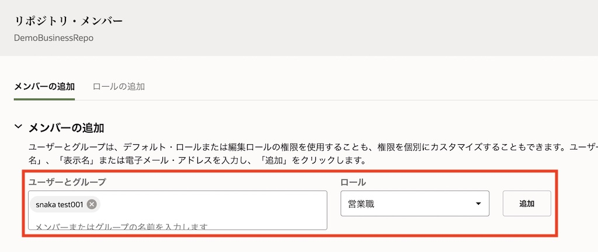
【TIPS】
既に追加済のOCMユーザーのロールを変更する場合は、そのユーザーの編集アイコンをクリックし、ロールを変更します
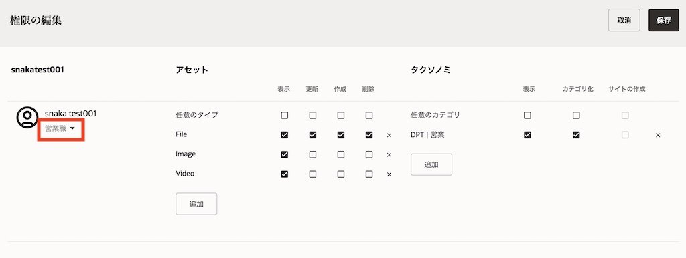 -
完了をクリックします
3.5 確認
-
別ブラウザを開き、メンバー追加したOCMユーザーでサインインします
-
アセットを開き、2.1項でメンバー追加されたリポジトリを開きます
-
カテゴリタブを開きます。表示されるカテゴリがA事業部/営業のみに限定されていることを確認します。また、表示されるアセットもA事業部/営業カテゴリに紐付けられたアセットのみに限定されていることを確認します 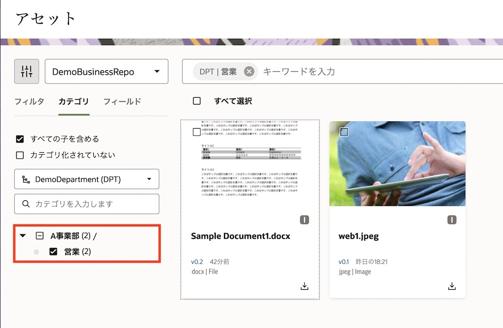
-
画像ファイルや動画ファイルは、リポジトリに登録できないことを確認します 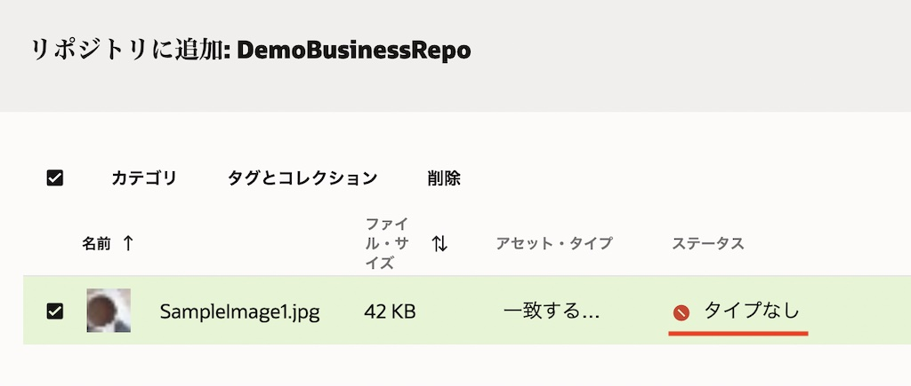
-
オフィス文書(WordやExcel)は、リポジトリに登録できることを確認します。また、A事業部/営業カテゴリへの紐付けも可能であることを確認します 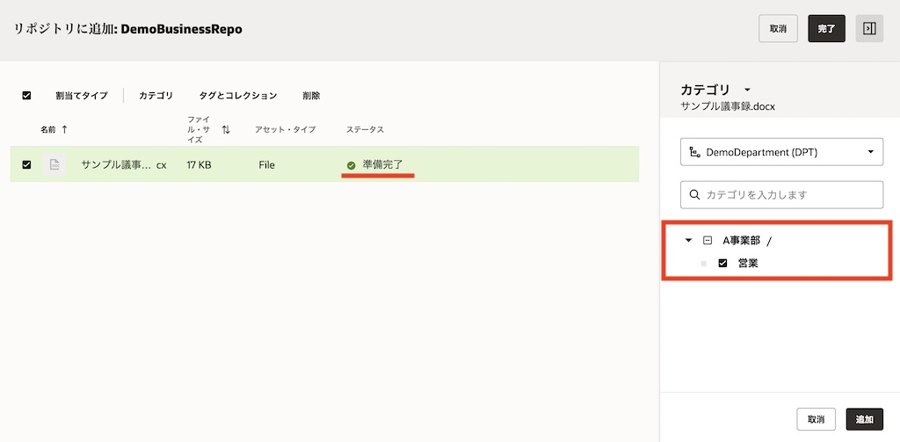
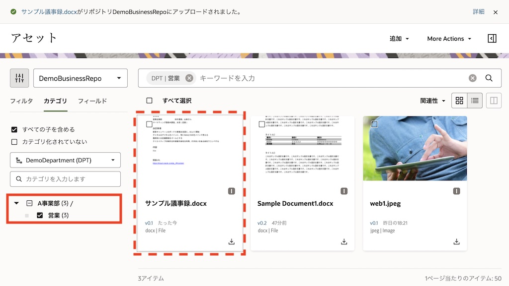
3.6 追加の確認（オプション作業）
3.2項〜3.5項の手順を繰り返し、技術職ロールと企画職ロールをそれぞれ作成し、ユーザーに割り当てます。
割り当てたロールにより、アセット・タイプやカテゴリのアクセス権限が適切に変更されることを確認します。以下の画像は、技術職ロールを付与した場合のアクセス権限設定とリポジトリ内のカテゴリおよびアセットの見え方です
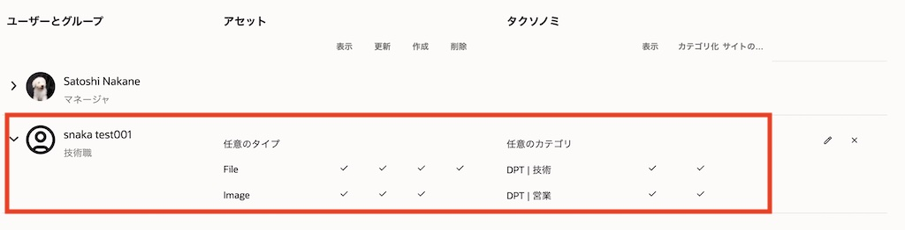
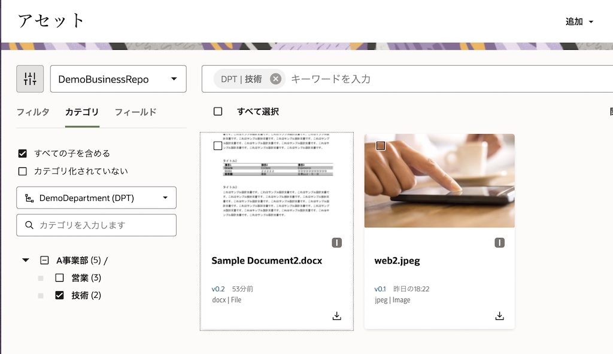
以上でこのチュートリアルは終了です。